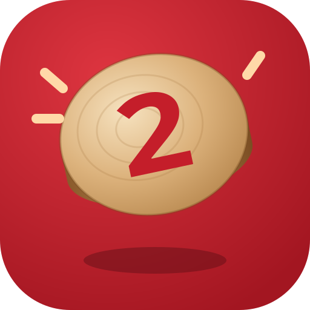
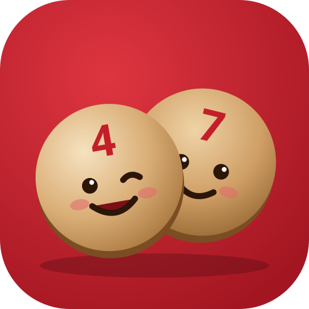
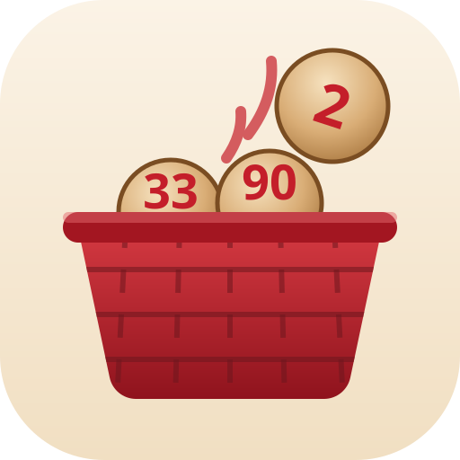
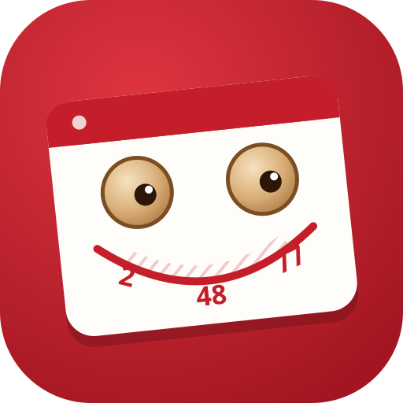

A wooden token with a red “2” (ambo) jumping out of the bag. Simplest silhouette, best at favicon size.

Two wooden tokens, 4 and 7, leaning on each other — one winks. A mascot that can appear in empty states and win moments.

The red wicker basket with tokens peeking out and the “2” flying off. Most narrative; busiest at small sizes.

A cartella whose two marked tokens are eyes and whose printed row bends into a grin. Reads as “tombola” instantly.